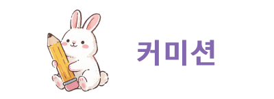

무료 라이브 배경화면 입니다.
다운로드하여 스마트폰 배경화면으로 지정하여 쓰세요.
예시 이미지로 스마트폰에서 어떨지 참고하세요.
라이브 배경화면을 하시고 싶은분은 밑에 구글 드라이브 링크에서 다운로드 하세요.(mp4파일입니다)
라이브배경화면 다운로드
스마트폰에서 라이브배경화면 설정방법을 모르시면 밑에 가이드 페이지의 글을 참고 하세요.
스마트폰 설정 가이드 보기
